미리보기
아래 그림은 앞으로 다룰 내용을 전체적으로 보여주는 그림이다. 지금은 잘 이해되지 않더라도 한번 살펴보자.
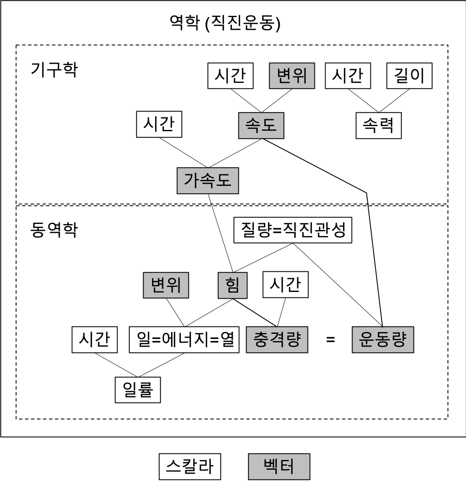
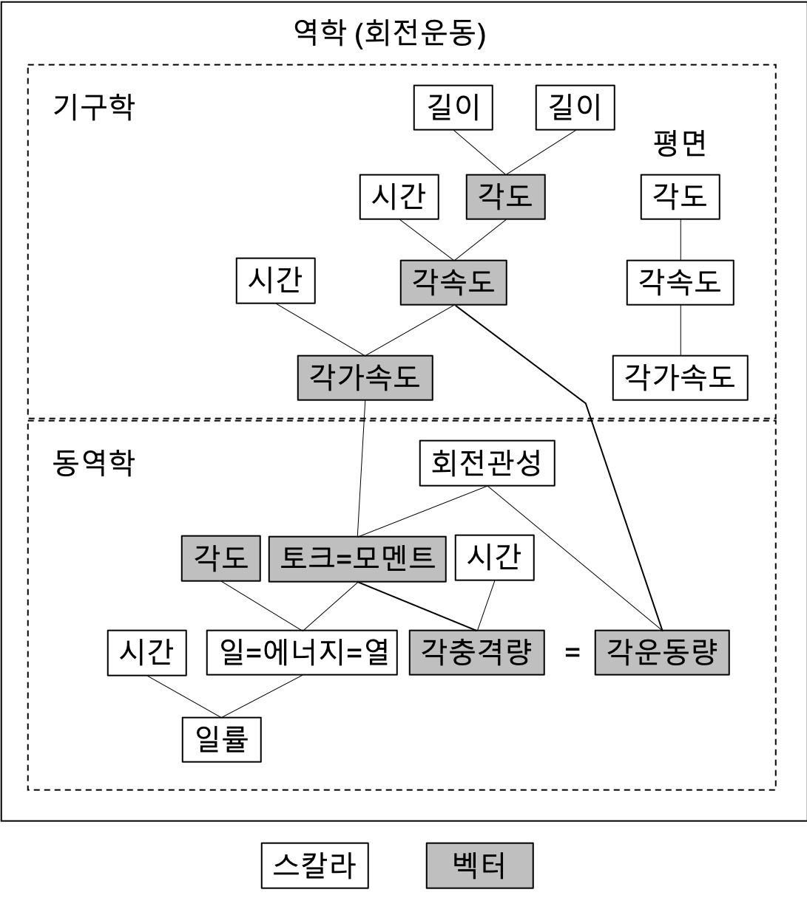
꼬리말 보기 연습[1] \leftarrow 눌러보세요!!
NOTE
본문에 나오는 미분/적분 등 아직 배우지 않은 설명이 나오면 건너뛰며 보아도 무방하다.
1장. 단위
수학과 달리 물리를 공부하기 위해서는 단위unit에 대한 확실한 개념이 선행되어야 한다. 본 절에서는 물리에서 사용하는 단위를 살펴본다.
1. 단위란 무엇인가
단위는 왜 생겨났을까? 먼 과거를 생각해보자. 고대시대라고 생각해도 좋다. 사람들이 사냥을 하다가 곰을 만났다. 처음보는 동물이라 머뭇머뭇 하다가 위험을 느끼고 가까스로 도망쳤다. 다른 사람들에게 이 사실을 알리고 조심하라고 하고 싶다. 곰을 어떻게 설명해야 할까? 팔을 벌리며 말한다.
“이만큼 큰 동물을 만나면 무조건 도망쳐.”
그런데 듣는 사람들이 이해를 못한다.
“얼마나 크다는 거야?”
그래서 길이를 비교적 정확히 표현할 수 있는 수단을 생각해낸다.
“내 팔 길이의 다섯 배는 돼 보였어.”
이제야 사람들이 이해하기 시작한다.
눈치가 빠른 사람은 여기서 단위의 개념이 탄생했다는 것을 알 수 있을 것이다. 바로 ‘내 팔 길이’가 단위이다. 누구나 아는 길이의 몇 배인지를 알면 모든 사람이 정확한 길이를 표현하고 이해할 수 있게 된다.
실제로 사람의 신체부위를 이용한 단위가 많다. 서양에서 사용하는 인치inch, 피트feet, 야드yard는 각각 손가락 한 마디, 발 크기, 벌린 팔 길이의 반을 의미한다고 한다. 6.5 피트는 서양 사람 발 크기의 여섯 배 반을 의미하는 것이다. 물론 정확하진 않았겠지만 당시 사람들이 생활하기에는 큰 문제가 없었을 것이다.
같은 길이를 여러가지 단위로 표현할 수 있다. 예를 들어 우리집 TV의 대각선 길이는 55 인치이자 약 4.5 피트이다. TV 길이를 손가락 마디로 재면 55배이고 발바닥으로 재면 4배 하고도 약 0.5배와 같다는 것이다. 숫자와 단위가 변할 뿐 우리집 TV가 커지거나 작아지는 것이 아니다. 이와 같이 하나의 단위로 표현된 양을 다른 단위로 표현하는 것을 단위변환이라고 한다.
길이 뿐만 아니라 면적, 부피, 무게, 시간의 단위도 객관적으로 확인할 수 있는 양으로 단위를 만든다.
시간의 경우 태양이 뜨고 다시 뜰 때까지의 시간(지구 자전 시간)을 1일이라고 하였고, 달이 차고 기우는 것(달의 공전 시간)을 보고 한 달을 만들었다. 그러고 보면 옛날 사람들이 1년(지구의 공전 시간)이 365일인지 어떻게 알아내었는지 궁금해진다.
우리나라 사람들도 곡식의 부피를 재기 위하여 ‘되’, ‘말’[2] 등의 단위를 만들었고 집의 면적을 말하기 위하여 ‘평’[3]을 생각해냈다. 옛날에는 이정도면 생활하는 데에 문제가 없었지만 지금은 정밀도가 떨어지고 국제표준을 따르기 위하여 모두 사라진 단위이다.
2. 기본단위
물리량은 물리학의 대상이 되는 측정가능한 양을 말한다. 우주의 모든 물리량은 7개의 기본단위와 그 조합으로 나타낼 수 있다. 국제단위계(SI)에 따르면 다음의 기본단위base_units를 사용한다.
표 1-1. 기본단위
| 물리량 | 이름 | 기호 |
|---|---|---|
| 길이length | 미터meter | m |
| 질량mass | 킬로그램kilogram | kg |
| 시간second | 초second | s |
| 전류electric_current | 암페어Ampere | A |
| 온도temperature | 켈빈Kelvin | K |
| 물질량amount_of_substance | 몰mole | mol |
| 광도(빛의 세기)luminous_intensity | 칸델라candela | cd |
길이, 질량, 시간을 나타내는 단위인 m, kg, s의 앞 글자를 따서 흔히 MKS 단위계라고 한다. (참고로 CGS 단위계는 cm, g, s의 앞 글자이다.)

3. 숫자와 단위 사이에 공백넣기
숫자와 단위 사이에는 공백을 추가하여야 한다.
예)
1 m
72 km/h
단, 예외가 있다. 퍼센트와 온도를 나타내는 도(degree)는 붙여서 쓴다.
예)
30%
100oC
물리량을 더하거나 뺄 때에는 각각 단위를 붙인다.
예)
100 \pm 5 kg (\times)
100 kg \pm 5 kg (\bigcirc)
또는 숫자를 괄호를 묶는다.
예)
(100 \pm 5) kg
퍼센트일 때 특히 주의해야 한다.
예)
1 + 10% \neq 11%
1 + 10% = 100% + 10% = 110%
4. 크고 작은 물리량 나타내기
지구에서 태양까지의 거리와 같이 매우 큰 수나 전자electron의 질량과 같이 매우 작은 수를 나타내기 위해 기본단위만을 사용한다면 숫자가 매우 길어져 불편할 것이다.
예)
지구에서 태양까지의 거리 = 약 150,000,000,000 m
전자의 질량 = 약 0.000000000000000000000000000911 g
NOTE 숫자와 단위 사이에는 공백을 하나 삽입한다.
이와 같이 매우 큰 수나 작은 수를 표기할 때는 1,000 단위로 묶어주는 접두사를 붙이는 것이 국제표준이다.
표 1-2. 큰 수
| 접두사 | 이름 | 곱하는 수 |
|---|---|---|
| k | kilo | 10^{3} |
| M | mega | 10^{6} |
| G | giga | 10^{9} |
| T | tera | 10^{12} |
| P | peta | 10^{15} |
표 1-3. 작은 수
| 접두사 | 이름 | 곱하는 수 | 비고 |
|---|---|---|---|
| d | deci | 10^{−1} | 1,000 단위는 아니지만 유용하다. |
| c | centi | 10^{−2} | 1,000 단위는 아니지만 유용하다. |
| m | milli | 10^{−3} | |
| \mu | micro | 10^{−6} | 알파벳이 부족하여 그리스 문자 \mu(뮤)를 사용한다. |
| n | nano | 10^{−9} | |
| p | pico | 10^{−12} |
예)
1 km = 1,000 m
1 MW = 1,000,000 W (와트Watt)
1 cm = 0.01 m
1 \mug = 0.000 001 g (보기 편하도록 공백을 삽입하였다)
1 TB = 약 1,000,000,000,000 B (바이트Byte)
NOTE 컴퓨터 용량은 2의 배수로 표현되므로 정확하게는 1,099,511,627,776 B 이다.
5. 단위에서 대소문자
단위를 나타내는 문자에는 해당 물리량을 발견한 사람을 기리기 위하여 그의 이름을 사용하는 경우가 많다. 영어에서도 사람이름은 대문자로 시작하듯이 이러한 경우에는 반드시 대문자를 써야 한다.
표 1-4. 대문자 단위 사용예
| 사용예 | 단위명 | 비고 |
|---|---|---|
| 0 K | 켈빈Kelvin | -273.15oC (절대영도) 0oK가 아니다 |
| 220 V | 볼트Volt | |
| 1 A | 암페어Ampere | |
| 10 N | 뉴턴Newton | |
| 36 J | 줄Joule | |
| 100 W | 와트Watt |
예)
1 Km (\times)
1 km (\bigcirc)
6. 기본 단위의 조합
앞에서 배운 7가지 기본 단위를 조합하여 수 많은 유도단위derived_units를 만들 수 있다. 예를 들어보자.
예)
속도 = 거리 / 시간
kph = km/h
힘 = 질량 \times 가속도 = 질량 \times 길이 / 시간2
N = kg\cdotm/s2
일률 = 일 / 시간
W = J/s
이와 같이 단위를 조합할 때는 \cdot(곱하기)과 /(나누기), 2(제곱) 등의 기호를 사용한다.
7. 단위에서 나누기의 의미
앞으로 '단위 OO당'이라는 표현을 아주 많이 사용할 것이다. 예를 들어 삼겹살이 A 식당에서는 200 g에 1만원, B 식당에서는 300 g에 2만원이라면 100 g당 가격은 A 식당이 더 싸다. 이를 'A 식당이 단위 그램당 삼겹살 가격이 더 싸다'라고 표현한다. 이와 같이 비교하기 쉽도록 동일한 기준으로 표현하는 방식이다.
물리의 단위에서 km/h, J/s와 같이 나누기 표시[4]가 많이 사용된다. 단위에서 나누기 표시는 동일한 방식으로 해석할 수 있다.
예)
15.6 m/s는 1초 동안 15.6 m를 이동하는 속력
즉, 나누기의 분모에 표시된 단위 앞에 1이 생략되었다고 생각하고 분모의 물리량만큼 변화하는 동안 분자의 물리량이 변화한다고 생각하면 된다. 이를 물리학자들은 다음과 같이 이야기하기도 한다.
15.6 m/s는 단위 시간당 15.6 m를 이동하는 속력
물리에서 시간의 기본단위는 초이므로 1초를 단위시간이라고 부르는 것이다.
8. 단위변환
단위도 하나의 변수로 볼 수 있다. 1 m는 1과 m의 곱하기로 보는 것이다.
1 m = 1 \times m
예를 들어
1 km = 1000 m\tag{1.1}
의 양변을 1000으로 나누면
(1) \frac{1}{1000} km = 1 m
을 얻을 수 있다. 다시 양변을 m으로 나누면
(2) \frac{1\ \text{km}}{1000\ \text{m}} = 1
가 된다. 식 (1.1)의 양변을 km으로 나누면
(3) 1 = \frac{1000\ \text{m}}{1\ \text{km}}
가 된다. 세 개의 식은 모두 유용하다. (1)번 식은 1 m가 몇 km인지를 알려준다. (2)번 식은 1 km를 1000 m로 나누면 숫자 1이 된다는 것을 보여준다. 1은
2.5 \times 1 = 2.5
와 같이 어떤 수에 곱하든 값을 변경하지 않는다. 따라서 \frac{1\ \text{km}}{1000\ \text{m}}을 임의의 값에 곱하더라도 변화가 없을 것이다. 만약 300 m에 곱하면
300 m \times \frac{1\ \text{km}}{1000\ \text{m}} = 0.3 km
와 같이 0.3 km를 얻을 수 있다. 단위가 변환되었다!!! 즉, m 단위의 물리량을 km 단위의 물리량으로 변환한 것이다. (3)번 식 또한 단위변환에 이용할 수 있다. 3.5 km에 곱해보자.
3.5 km \times \frac{1000\ \text{m}}{1\ \text{km}} = 3500 m
그러면 3500 m가 되었다. 이번에는 km 단위의 물리량을 m 단위의 물리량으로 변환하였다. 이와 같이 단위를 하나의 변수로 보면 매우 편리하게 단위변환을 할 수 있다.
NOTE
온도는 단위변환에 더하기(+)가 있어 위와 같이 계산할 수 없다.
예)
^\circC (Celcius, 섭씨)를 ^\circF (Fahrenheit, 화씨)로 변환할 때에는 아래와 같이 한다.
화씨온도 = \frac{9}{5} 섭씨온도 + 32
0^\circC는 32^\circF이고 100^\circC는 212^\circF이다.
9. 차원분석(dimensional analysis)
모든 단위는 특정 차원(dimension)에 속한다. 차원은 동일한 물리량을 표현하는 단위의 집합을 의미한다고 생각할 수 있다. 차원은 기본단위의 지수의 곱으로 표현한다. 운동의 법칙을 표현할 때는 M(mass), L(length), T(time)만으로 차원을 표현할 수 있다.
예를 들어
- m와 cm는 길이 차원에 속하며 L로
- m/s와 kph은 속도 차원에 속하며 LT^{-1}으로
- N과 kgf는 힘 차원에 속하며 MLT^{-2}으로 표현한다.
- rad은 원호를 반지름으로 나눈 단위이므로 무차원(dimensionless)이다.
- degree(^\circ)는 2\pi/180 rad이므로 차원은 없지만 항상 계수(2\pi/180)를 곱해 rad으로 변환해야 하므로 불편하여 사용하지 않는다.
a. 차원분석의 원칙
원칙 1. 같은 차원의 물리량은 서로 더하거나 뺄 수 있으나 차원이 다르면 더하거나 뺄 수 없다.
- 뉴턴의 제3법칙인 F-ma=0은 MLT^{-2} 차원끼리 빼는 것이므로 타당한 식이다.
- y=x+2x^2을 만족하는 x는 무차원이어야 한다. 만약 무차원이 아니라면 원칙 1을 위배하여 물리적으로 성립할 수 없는 식이 된다.
원칙 2. 초월함수(transcedental function)는 무한급수로 표현되므로 무차원 값을 입력해야 한다.
\sin x = x - \frac{x^3}{3!} + \frac{x^5}{5!} - \cdots
이므로 x는 반드시 무차원이어야 한다. \cos x, \tan x, \exp x, \log x 등도 마찬가지이다.
원칙 3. 지수는 무차원이어야 한다.
y=2^x의 식에서 x는 지수이므로 무차원이어야 한다. 지수는 반복하여 곱한다는 의미인데 만약 x가 2 m라면 2 m번 반복하라는 말도 안되는 의미가 된다.
원칙 4. 초월함수와 지수 표현식은 차원이 있는 물리량과 곱할 수 있다.
y=\sin x에서 x는 무차원이어야 하지만 \sin x 앞에 1 cm가 곱해있다고 가정하면 y는 cm 단위의 길이 차원이 된다.
b. 차원분석의 장점
-
물리적으로 타당한 식인지 알 수 있다.
-
단위를 추정할 수 있다.
F=ma에서 F의 단위가 N이고 m의 단위가 kg이라면 차원분석을 통하여 a의 단위가 m/s^2이라는 것을 알 수 있다.
y=sin(2\pi t)에서 t의 단위가 s라면 t 앞에 1 Hz가 곱해진다는 것을 암시한다.
2장. 스칼라와 벡터
1. 정의
스칼라scalar량은 시간, 질량, 에너지와 같이 숫자 하나로 표현할 수 있는 물리량을 의미한다. 3차원 공간의 운동을 표현하는 속도, 힘, 각운동량과 같이 여러 개의 숫자가 필요한 물리량은 벡터vector량이라 한다. 스칼라는 크기 또는 양quantity을 표현하며 벡터는 양과 방향direction을 표현한다. 스칼라는 기본 문자로 표현하며 벡터는 문자위에 화살표를 표시하거나 굵은 문자로 표시한다.
표 2-1. 스칼라와 벡터
| 항목 | 스칼라 | 벡터 | 비고 |
|---|---|---|---|
| 표현 대상 | 크기 | 크기과 방향 | |
| 표기예 | m, E | \vec{v}, \textbf{L} |
2. 연산
스칼라는 스칼라끼리, 벡터는 벡터끼리 더하거나 뺄 수 있다. 스칼라에 벡터를 더하거나 뺄 수 없고 벡터에 스칼라를 더하거나 뺄 수 없다.
표 2-2. 스칼라와 벡터의 합
| 피연산자 1 | 피연산자 2 | 연산자 | 결과 | 예 |
|---|---|---|---|---|
| 스칼라 | 스칼라 | 더하기 | 스칼라 | 2 kg + 500 g = 2.5 kg |
| 스칼라 | 벡터 | 더하기 | 연산불가 | t + \vec{v} = ? |
| 벡터 | 스칼라 | 더하기 | 연산불가 | \vec{a} + 3 = ? |
| 벡터 | 벡터 | 더하기 | 벡터 | \vec{R}_{earth/sun} + \vec{R}_{moon/earth} = \vec{R}_{moon/sun} |
스칼라 또는 벡터를 더할 때 더해지는 두 값을 피연산자operand라고 한다. 더하기는 연산자operator라고 한다. 더하기에 대한 두 피연산자는 동일한 종류의 물리량[5]이어야 한다. 예를 들어, 3 km와 200 m는 모두 거리를 나타내는 물리량이므로 더할 수 있다. 즉, 3 km + 200 m = 3.2 km = 3,200 m이다. 하지만 3 km와 20 km/h는 더할 수 없다. 거리와 속력을 더하는 것은 허락되지 않는다.
스칼라와 스칼라를 곱하면 스칼라가 된다. 스칼라와 벡터 또는 벡터와 스칼라를 곱하면 벡터가 된다. 벡터와 벡터를 곱하면 스칼라가 될 수도 있고 벡터가 될 수도 있다. 스칼라가 되는 경우는 내적dot_product 방식으로 곱할 때이고 벡터가 되는 경우는 외적cross_product 방식으로 곱할 때이다. 내적은 고등학교 수학시간에 배우며 외적은 대학과정이므로 배우지 않는다.
표 2-3. 스칼라와 벡터의 곱
| 피연산자 1 | 피연산자 2 | 연산자 | 결과 | 예 |
|---|---|---|---|---|
| 스칼라 | 스칼라 | 곱하기 | 스칼라 | 2 m \times 3 m = 6 m2 |
| 스칼라 | 벡터 | 곱하기 | 벡터 | 2\times\vec{v}_1 = \vec{v}_2 |
| 벡터 | 스칼라 | 곱하기 | 벡터 | \vec{a}_1\times 3 = \vec{a}_2 |
| 벡터 | 벡터 | 내적 | 스칼라 | \vec{a}\cdot \vec{b} = p |
| 벡터 | 벡터 | 외적 | 벡터 | \vec{a}\times\vec{b} = \vec{c} |
3장. 물체의 운동
본 절에서는 물체의 운동motion, 특히 입자particle의 운동을 기술하는 방법을 알아본다. 시간에 대한 물체의 움직임을 기술하는 분야를 기구학kinematics [6]이라고 한다. 물체가 움직이는 원인인 힘을 다루는 분야를 동역학dynamics [7]이라고 한다. 중고등학교 물리시간에는 기구학과 동역학을 모두 배운다. 단, 하나의 입자에 대한 운동을 다루며 이를 입자동역학particle_dynamics이라고 한다. 우주는 입자로 이루어져 있으므로 입자동역학은 물리학의 모든 분야에 대한 가장 기초가 되는 부분이다. 잘 익혀두도록 하자.
"세상의 모든 것은 원자로 이루어져 있다"
- 리처드 파인만(1918-1988, 노벨물리학상 수상자), '인류가 멸망했을 때 다음 시대의 인간에게 단 하나의 지식을 남길 수 있다면 무엇을 전할 것인가'라는 질문에 대한 그의 대답
1. 길이와 변위
길이length, 이동거리distance와 변위displacement, 위치position는 모두 동일한 물리량이다. 기본단위인 m와 파생단위인 km, cm 등으로 나타낼 수 있다.
길이는 '물체의 폭'과 같이 자로 잴 수 있는 물리량이며 0 또는 양수이다. 그림으로 표시할 때는 '양방향' 화살표를 사용한다.
예)
아빠의 키 = 180 cm
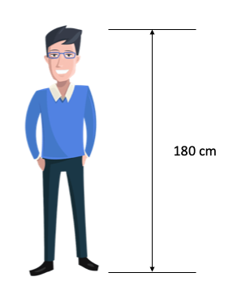
그림 3-1. 길이의 예
이동거리는 물체가 이동한 경로를 따라서 움직인 거리를 의미한다. 철수가 북쪽으로 10 m 이동한 후 동쪽으로 20 m를 이동하였다면 이동 거리는 30 m이다. 길이와 이동 거리는 스칼라량이다.
변위는 물체가 이동한 방향과 거리를 나타내는 물리량이며 측정하기 전에 기준과 방향을 정해야 한다. 기준에 위치할 때는 0, 정해진 방향으로 이동했을 경우 양수, 반대방향으로 이동하면 음수로 표현한다. 그림으로 표시할 떄는 '단방향' 화살표를 사용한다.
예)
100 m 달리기 출발선을 기준으로 결승선 방향을 양의 방향이라고 한다면, 철수가 달리기 준비자세일 떄에는 0 m에 위치하고 있고 절반을 달렸다면 50 m, 포기하고 뒤로 두 걸음 걸었다면 -2 m에 있다.
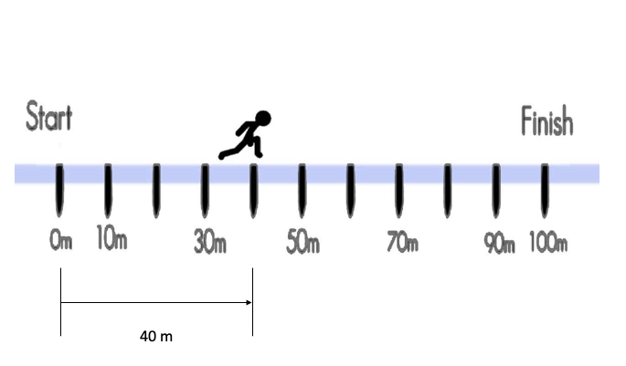
그림 3-2. 변위의 예
변위는 이동한 거리와 방향인 반면 위치는 기준에 대한 상대 거리를 의미한다. 시작위치에서 종료위치로의 이동과 방향이 변위와 같다. 예를 들어, 철수가 둘레길이 400 m인 운동장을 한 바퀴 돌았다면 시작위치와 종료위치가 동일하므로 변위는 \vec{0} (영벡터)이며 이동거리는 400 m이다.
운동장은 이차원이므로 임의의 위치를 나타내기 위해서는 두 개의 숫자가 필요하다. 날아가는 비행기와 같이 삼차원 위치를 표현하기 위해서는 세 개의 숫자가 필요하다. 즉, 벡터로 표시해야 한다.
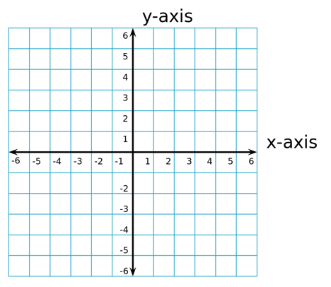
그림 3-3. 2차원 위치 좌표계
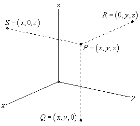
그림 3-4. 3차원 위치 좌표계
2. 속력/속도
철수는 100 m를 20초에 달렸고 영희는 200 m를 50초에 달렸다고 하면 누가 더 빨리 달린 것일까? 이와 같은 질문에 답할 수 있는 물리량이 속력이다. 철수는 100 m / 20 s = 5 m/s로 1초에 5 m를 달렸고 영희는 200 m / 50 s = 4 m/s로 1초에 4 m를 달렸으므로 철수가 더 빠르다고 말할 수 있다. 즉, 철수의 속력이 더 크다.
속력speed은 단위 시간당 이동거리를 의미한다. 엄밀히 말하면 속력은 이동거리를 시간에 대하여 미분한 것이다.
v=\dot{x}=\frac{dx}{dt}\tag{3.1}
속도velocity는 단위 시간당 변위를 의미한다.
\vec{v} = \dot{\vec{x}}=\frac{d\vec{x}}{dt}\tag{3.2}
이동거리는 스칼라이므로 속력도 스칼라이며 변위는 벡터이므로 속도도 벡터이다.
스칼라: 이동거리 \rightarrow 속력
벡터: 변위 \rightarrow 속도
예를 들어, 철수가 둘레길이 400 m인 운동장을 80초에 한 바퀴 돌았다면 속력은 5 m/s이고 속도는 \vec{0} m/s이다.
평균 속력/속도
어떤 물체가 이동 거리 s m를 이동하는 데에 t초가 걸렸다고 한다면 t초 동안 평균적으로 s/t m/s의 속력으로 이동한 셈이며 이를 평균 속력average_speed이라고 한다. 변위에 대한 개념은 평균 속도average_velocity라고 한다.
예)
영희가 100 m를 10초에 달렸다면 평균 속력은 10 m/s이다.
쏘렌토가 고속도로 100 km를 한 시간에 이동하였다면 평균 속력은 100 kph이다.
예)
대전에서 정북에 위치한 수원까지의 거리가 직선거리로 120 km라 가정하고 쏘렌토로 두 시간에 이동하였다면 평균 속력은 60 kph이며 평균 속도는 벡터 (0, 60) kph라고 표현할 수 있다.
순간 속력/속도
매우 짧은 시간 간격 동안 변화한 이동 거리(또는 변위)로부터 구한 평균 속력(또는 평균 속도)을 생각해보자. 시간 간격을 점점 짧게 줄여나가면 그 시간 동안 이동한 거리도 점점 감소할 것이다. 시간 간격과 이동 거리가 모두 거의 0에 근접할 때의 이동 거리 \div 시간 간격을 순간 속력instantaneous_speed(또는 순간 속도instantaneous_velocity)라고 부른다.
엄밀히 말하면 순간 속력은 이동 거리를 시간으로 미분한 값이다. 이동 거리 또는 변위를 시간에 대한 함수로 나타낸 후 이를 시간에 대하여 미분하여 속력/속도를 구할 수 있다. (미분을 학습한 후에 다시보자)
예)
그랜저가 직선 도로를 36 kph로 등속운동한다면 이동 거리는 시작점일 때 0이었다가 점점 증가할 것이다. 이를 나타내는 함수는 다음과 같다.
x=x(t)=10t\tag{3.3}
(변위 x의 단위는 m, 시간 t의 단위는 s이다. 앞으로 [ ]는 단위를 의미한다.)
식 (3.3)에서 t=0일 때 x=0이 되는 것을 눈여겨보자. 0초일 때 그랜저가 있는 출발지점을 0 m(기준점)라고 정한 결과이다. 시간이 흘러 t=1이 되면 x=10이 된다. 그랜저는 1초 후 출발점으로부터 10 m 지점에 위치한다는 의미이다. 그랜저의 속력은 다음과 같다.
v=\dot{x}=\frac{\text{dx}}{\text{dt}}=10\tag{3.4}
이와 같이 직진 등속운동을 하는 물체의 경우 평균 속력과 순간 속력이 같다.
NOTE
kph는 kilometer per hour의 약자이며 km/h와 같은 단위이다. 키보드 입력이 더 편하기 때문에 자주 사용된다.
예)
90 kph = 90 km/h
NOTE
km/h를 m/s로 변환할 때는 3.6으로 나누어 주면 된다. 반대로 m/s를 km/h로 변환할 때는 3.6을 곱한다.
예)
\begin{aligned}
90\ \text{km/h} &= \frac{90\ \text{km}}{1\ \text{h}} \\
&= \frac{90\cdot 1000\ \text{m}}{60\cdot 60\ \text{s}} \\
&= \frac{90\cdot 1000\ \text{m}}{3600\ \text{s}} \\
&= \frac{90}{\frac{3600}{1000}}\frac{\text{m}}{\text{s}} \\
&= \frac{90}{3.6}\frac{\text{m}}{\text{s}} \\
&= 90\textbf{/ 3.6}\ \text{m/s} \\
&= 25\ \text{m/s}
\end{aligned}
\begin{aligned} 25\ \text{m/s} &= \frac{25\ \text{m}}{1\ \text{s}} \\ &= \frac{\frac{25}{1000}\ \text{km}}{\frac{1}{3600}\ \text{h}} \\ &= \frac{25\cdot 3600}{1000}\frac{\text{km}}{\text{h}} \\ &= 25\cdot\textbf{3.6}\ \text{km/h} \\ &= 90\ \text{km/h} \\ \end{aligned}
3. 가속도
가속도acceleration는 단위 시간당 속도의 변화량(또는 속도의 시간변화율)이다. 즉, 속도를 미분한 값이다.
a=\dot{v}=\frac{dv}{dt}\tag{3.5}
예)
그림 . 피사의 사탑
영자가 피사의 사탑 100 m 높이에서 야구공을 살짝 놓았다면 변위는 다음과 같다. (일단은 그냥 받아들이자.)
\begin{aligned}
y &= y\left( t \right) \\
&= 100 - \frac{9.81}{2}t^{2}
\end{aligned}\tag{3.6}시간이 0 s일 때 100 m임을 확인하자.
야구공의 속도는 다음과 같다.
\begin{aligned}
v &= \dot{y} \\
&= \frac{dy}{dt} \\
&= - 9.81 t
\end{aligned}\tag{3.7}시간이 0 s일 때 0 m/s임을 확인하자.(살짝 놓음)
야구공의 가속도는 다음과 같다.
\begin{aligned}
a &= \ddot{y} \\
&= \frac{d^{2}y}{dt^{2}} \\
&= \frac{d}{dt}\left( \frac{dy}{dt} \right) \\
&= - 9.81
\end{aligned}\tag{3.8}결국 중력가속도와 같아진다.
자주 쓰는 단위는 m/s2이며 cm/s2, km/min2 등도 가능하다.
가속도는 속도의 크기변화만을 의미하는 것이 아니다. 속도의 방향변화도 가속도이다. 가속도가 벡터이기 때문에 가능한 일이다. 지구의 운동이 대표적인 예이다. 지구의 속력(속도의 크기)은 거의 변화가 없지만 항상 방향이 변하고 있다. 지구의 방향을 변화시키는 원인이 바로 태양의 만유인력이다. 마치 끈에 묶인 돌을 돌리면 원운동을 하듯이 태양이 당기는 힘에 의하여 지구의 방향이 변화하는 것이다. 지구의 방향변화는 지구의 가속도와 같다.
그림 . 지구의 원운동
4장. 힘과 운동
1. 질량
질량mass은 작용하는 힘force에 대하여 속도의 변화를 억제하는 성질이다. 질량이 커질수록 작용하는 힘에 대하여 속도의 변화가 작다. 즉, 정지한 물체는 계속 정지하려하고 움직이는 물체는 속력과 방향이 변하지 않으려 한다. 질량이 점점 줄어 0 kg이 된다면 정지한 물체에 아무리 작은 힘이 작용하더라도 속도가 무한대로 커진다.[8]
질량은 그 물체가 우주 어디에 있더라도 변하지 않는 고유의 물리량이다. 동일한 물체라도 지구 표면에 있을 때의 무게와 달 표면에 있을 때의 무게가 다르다. 질량이 더 큰 지구가 질량이 작은 달보다 물체를 당기는 만유인력(힘)이 더 크다. 이렇게 물체에 작용하는 힘이 무게weight이다.
2. 힘
가속도에 질량을 곱하면 힘force이 된다. 그 유명한 뉴턴Newton의 제 2법칙이다.
F=ma\tag{4.1}
식 (4.1)로부터 아래의 사실을 알 수 있다.
질량이 m인 물체가 가속도 a로 가속하고 있다면 힘 F를 받고 있다.
식 (4.1)은 식 (4.2)와 같이 변환할 수 있다.
a=\frac{F}{m}\tag{4.2}
식 (4.2)로부터 무중력 공간에 질량이 m인 물체가 정지해 있을 때 F의 힘을 가하면 a의 가속도가 발생함을 알 수 있다. 이때 가속도의 방향은 힘의 방향과 같고 크기는 F/m이다.
예를 들어, 무중력 공간에 1 kg의 물체가 정지해 있을 때 1 N의 힘을 가하면 1 m/s2의 가속도가 발생한다. 즉, 속도의 순간 변화량이 초당 1 m/s가 된다.
질량은 스칼라, 가속도는 벡터이므로 힘도 벡터이다.
식 (4.1)로부터 힘의 단위를 구할 수 있다.
1 kg \times 1 m/s2 = 1 kg \cdot m/s2 = 1 N
그렇다. 힘의 단위는 N(뉴턴)이며 kg \cdot m/s2과 같다. 힘은 질량 곱하기 가속도이기 때문이다.
힘을 나타내는 여러가지 표현
앞에서 어떤 물체를 다른 물체(보통 천체)가 당기는 힘을 무게라고 하였다. 무게는 만유인력 때문에 발생한다. 옷에 문지른 책받침을 머리에 갖다대면 전기력으로 머리카락이 붙는다. 자석에 철이나 다른 자석을 갖다대면 자기력 때문에 달라붙는다. 서로 맞붙어 있는 두 물체 사이의 움직임을 방해하는 힘을 마찰력이라고 한다. 돌에 끈을 묶어 돌리면 밖으로 벗어나는 원심력과 끈이 잡아당기는 구심력이 평형을 이룬다. 물체를 물이나 다른 유체에 담그면 떠오르는 방향으로 부력이 생긴다. 달리기를 하거나 수영을 할 때 공기와 물이 방해하는 저항력으로 인하여 속도를 높이기가 힘들다. 자동차의 몸체와 휠 사이에는 충격을 줄여주는 스프링이 있으며 스프링이 압축될 때 스프링력이 발생한다.
무게, 만유인력, 전기력, 자기력, 마찰력, 원심력, 구심력, 부력, 저항력, 스프링력은 모두 '힘'의 다른 표현이다.
힘과 시간과의 관계 (난이도 상)
가속도와 힘 사이에는 질량을 "곱하기"만 할 뿐 미분이나 적분을 하지 않는다는 것이다. 곱하기는 시간의 변화가 일어나지 않는다. 반면 속도는 가속도의 적분(가속도가 속도의 미분이므로 반대임)이므로 시간의 경과가 필요하다. 만약 '정지'하고 있는 질량 1 kg인 물체에 힘 1 N이 가해지면 가속도는 '즉시' 1 m/s2이지만 그 순간 속도는 0 m/s이다. 힘이 지속적으로 작용하면(=가속도가 지속적으로 작용하면) 속도가 지속적으로 변하여 0보다 커진다.
3. 일과 에너지
질량이 1 kg인 물체에 1 N의 힘을 가하는 동안 그 물체가 힘의 방향으로 1 m 움직이면 그 힘은 1 J(줄)의 일work을 한 것이다.
1 N \times 1 m = 1 J
J은 일의 단위이며 N \cdot m 또는 kg \cdot m2/s2와 같다.
물체가 힘이 작용한 방향과 직각으로 움직인다면 그 힘이 한 일은 0 J이다. 힘이 작용한 방향으로 움직인 변위만 유효하다. 이는 벡터의 내적 개념이다. 힘 \vec{F}가 변위 \vec{r} 만큼 이동하며 한 일 W는 다음과 같다.
W=\vec{F}\cdot \vec{r}=|\vec{F}|\cdot |\vec{r}|\cos \theta\tag{4.3}
(| |는 벡터의 크기를 의미한다. \theta는 힘과 변위가 이루는 각도이다. \cos은 삼각함수 중 하나이며 수학시간에 배운다.)
식 (4.3)에서 \cos\theta는 힘과 변위의 방향이 같아 \theta가 0도이면 1이 되고, 두 방향이 직각이면 \theta가 90도가 되어 0이 된다. 에너지는 벡터의 내적이므로 스칼라량이다. ('표 2-3. 스칼라와 벡터의 곱'을 다시 보자.)
에너지energy는 일을 할 수 있는 능력이다. 예를 들어 피사의 사탑에서 야구공을 떨어뜨린다고 하면 야구공이 떨어지기 직전에는 위치에너지를 가지고 있다. 야구공은 떨어지면서 다른 물체를 힘으로 이동시킬 수 있으므로 일을 할 수 있다. 에너지는 어떤 물체가 어떤 상황에서 가지고 있는 양이며 그 양에 의하여 힘을 발휘하여 일을 할 수 있는 것이다.
잠자고 있는 거인은 가만히 있지만 깨어나면 일을 할 수 있다. 눈에 보이지는 않지만 거인의 몸안에 무언가를 가지고 있다고 할 수 있다. 이를 에너지라고 생각하면 된다.
에너지는 다양한 형태로 존재하며 생성되거나 소멸되지 않는다. 단지 변환될 뿐이다. 그 유명한 에너지 보존의 법칙이다.
자동차를 예로 들어보자. 자동차는 연료(기름)를 넣어야 움직일 수 있다. 자동차는 연료의 화학에너지를 사용하는 장치이다. 운전자가 시동을 걸면 기름통의 기름이 엔진으로 흘러들어가 공기와 섞여 분무된다. 이를 피스톤으로 압축하여 불을 붙이면 폭발하며 피스톤을 밀어낸다. 화학에너지가 운동에너지로 변환되는 과정이다. 피스톤은 엔진을 회전시키고 중간 기계장치를 거쳐 바퀴를 회전시킨다. 회전하는 바퀴는 자동차를 움직인다. 속도가 증가할수록 자동차의 운동에너지가 증가한다. 자동차가 언덕을 올라가면 위치에너지가 증가한다. 언덕위의 자동차는 엔진을 꺼도 언덕에서 내려올 수 있다. 내려오면서 속도가 증가한다. 위치에너지가 운동에너지로 변환되는 과정이다. 위치에너지와 운동에너지는 서로 왔다갔다 변환될 수 있다. (잠깐쉬고...)
속도가 너무 빠르면 사고가 발생할 수 있으므로 운전자가 브레이크를 밟아 속도를 줄인다. 브레이크는 바퀴와 차체 사이에 존재하는 두 개의 판을 마찰시켜 속도를 줄이는 장치이다. 두 개의 판이 마찰될 때 열과 소리가 발생한다. 운동에너지를 열에너지와 소리에너지로 변환하는 과정이다. 열에너지는 바람에 의하여 공기중으로 퍼져 나간다. 소리에너지는 공기의 파동을 만들고 결국 우리의 고막을 흔든다. 열에너지와 소리에너지는 다시 회수하여 사용하기가 매우 힘들기 때문에 손실에너지라고 한다. 결국 연료의 화학에너지가 열/소리에너지로 변환되어 손실되는 것이다. 연료를 다 사용하면 다시 채워야 자동차를 움직일 수 있다.
엔진의 시동을 거는 과정을 다시 살펴보자. 엔진은 연료를 주입해도 스스로 회전할 수 없다. 엔진과 연결된 전기모터가 엔진을 돌려주어야 한다. 전기모터는 배터리의 전기에너지를 운동에너지로 변환하는 장치이다. 엔진시동이 걸리면 엔진이 스스로 회전한다. 이때 전기모터는 엔진과 같이 회전하며 전기를 발생시키고 배터리를 재충전한다. 자전거에 연결된 전구에 불이 켜지는 것과 같은 원리이다. 전기모터가 충전할 때는 발전기라고 부른다. 전기모터와 발전기는 사실 같은 장치를 다르게 부르는 말이다.[9]
에너지는 일을 할 수 있는 능력이므로 일과 동일한 물리량이다. 즉, 에너지의 단위도 J이다.
단위가 동일한 물리량이 하나 더 있다. 열heat이다. 열도 에너지이므로 에너지와 단위가 같다. 즉, 에너지의 단위 = 일의 단위 = 열의 단위 = J
에너지는 물리에서 아주 중요한 물리량이다. 에너지가 중요한 이유는 아래와 같다.
첫째, 스칼라이기 때문이다. 벡터의 연산은 복잡하지만 스칼라의 연산은 편하다.
둘째, 보존되기 때문이다. 에너지가 보존된다는 사실로부터 다양한 방정식을 유도하여 물체의 운동을 알아내고 예측할 수 있다.
셋째, 서로 다른 분야에서 일어나는 현상의 상호작용을 설명할 수 있다. 속도와 전압의 상호작용은 언뜻 생각하기 어렵지만 운동에너지와 전기에너지의 변환은 쉽게 생각할 수 있다. (예, 전기모터)
4. 일률
일률power은 단위 시간당 일(또는 에너지)을 의미한다. 속도가 '단위 시간당' 변위이듯이 일률은 '단위 시간당' 일(에너지)이라는 것으로부터 일(에너지)의 미분이라는 것을 알 수 있다.
일률은 영어로 power이다. 한국어로도 파워라고 표현할 때가 많다. 출력도 일률과 같은 말이다. '스피커의 출력', '엔진의 출력'과 같이 사용한다.
앞에서 에너지는 어딘가에 담겨있는 개념이라고 하였다. 일률은 '같은 시간에 얼마나 많은 일을 하는가'에 대한 대답으로 생각할 수 있다. 구멍뚤린 양동이에 물이 담겨있다면 물이 줄줄 샐 것이다. 양동이에 담긴 물은 에너지이고 새는 물이 일을 한다고 생각할 수 있다. 1초 동안 새는 물을 일률로 생각하면 된다.
거인과 난장이가 일을 한다면 일반적으로 같은 시간에 거인이 일을 더 많이 할 것이다. 거인의 일률(파워)이 크다고 할 수 있다. 일상 생활에서 많이 쓰이는 '파워가 좋다'라는 말의 의미는 엄밀히 말하여 단순히 '힘이 좋다'는 의미라기 보다는 '같은 시간에 더 큰 힘을 낼 수 있다' 또는 '같은 시간에 힘으로 움직인 거리가 크다'를 의미하는 것이다. 예를 들어 '모닝보다 쏘렌토의 파워가 좋아'라는 말은 같은 시간에 쏘렌토가 더 큰 힘을 내거나 더 멀리 갈 수 있다는 말이다.
여기서 주의해야 할 점이 있다. 일을 많이 한 것과 일률이 크다는 것은 다른 의미라는 것이다. 양동이에 담긴 물이 많다고 해서 물이 빨리 새는 것이 아니다. 구멍의 크기가 커야 물이 빨리 샌다. 거인이 땀을 뻘뻘 흘리며 1분 동안 한 일과 난장이가 쉬엄쉬엄 하루종일 한 일을 비교해보면 거인의 일률이 더 클 수 있으나 일은 난장이가 더 많이 했을 것이다. 일과 일률의 차이는 '많이'와 빨리'의 차이로 이해할 수 있다.
순간 파워는 일(에너지)을 시간에 대하여 미분한 값이다. 즉, 일(에너지)의 순간변화율이다.
P=\dot{E}=\frac{dE}{dt}\tag{4.4}
일률은 단위 시간당 일이므로 단위는 J/s이며 이를 W(와트)로 줄여서 쓴다. 예를 들어 배터리가 초당 1 J의 에너지를 방출한다면 파워는 1 W이다.
1 J / 1 s = 1 J/s = 1 W
일률도 스칼라이다. 벡터로 표현할 수 없다.
에너지와 마찬가지로 파워가 중요한 이유는 다음과 같다.
첫째, 스칼라이다.
둘째, 보존된다. 배터리가 전구에 1초에 1 J을 전달하면 배터리가 준 1 W는 전구가 받은 1 W와 같다.
셋째, 상호작용을 설명할 수 있다. 이와 같은 목적으로는 에너지보다 더 많이 쓰인다.
여기까지는 에너지와 동일하다.
넷째, 에너지보다 측정이 용이하다. 안이 보이지 않는 양동이에 담긴 물의 양을 측정하기 위해서는 물을 모두 따라내야 하지만 흐르는 물의 순간적인 양을 측정하는 것은 쉽다. 예를 들어 배터리가 담고 있는 에너지에 양을 측정하는 것은 어렵지만(배터리를 완전충전한 후 완전방전해야 한다) 배터리가 방출하는 파워를 측정하는 것은 쉽다.
5. 효율 (난이도 상)
- 난이도 상
일상생활에서 '효율이 좋다' 또는 '효율이 나쁘다'는 말을 자주 한다. 흔히 적은 노력으로 우수한 성과를 낼 때 효율이 좋다고 이야기한다.
물리에서는 에너지를 변환하는 장치(에너지변환장치)에 대하여 입력되는 에너지 대비 출력되는 에너지의 비를 효율efficiency이라고 부른다. 앞에서 예를 든 자동차의 경우 동일한 연료를 주입했을 때 더 먼 거리를 주행하는 자동차가 효율이 좋은 자동차이다.[10]
에너지는 보존되므로 입력된 에너지는 어떠한 형태로든 모두 출력되어야 한다. 다양한 형태의 출력 에너지는 쓸모있는 에너지와 쓸모없는 에너지로 구분할 수 있다. 자동차의 경우 운동에너지는 쓸모있고 열에너지는 쓸모가 없는 에너지이다.
\begin{aligned} 입력에너지 &= 출력에너지 \\ &= 쓸모있는\ 에너지 + 쓸모없는\ 에너지 \end{aligned}
효율은 쓸모있는 출력에너지를 입력에너지로 나눈 값이다. 통상 100을 곱하여 백분율(%)로 표시한다.
효율[\%]=\frac{쓸모있는\ 출력에너지}{입력에너지}\times100\tag{4.5}
에너지는 음수가 될 수 없으므로 효율은 0 ~ 1 또는 0% ~ 100% 사이의 값을 갖는다.
우리나라에서 판매되는 가전제품은 에너지효율 등급을 표시해야 한다. 1등급은 효율이 좋은 가전제품이며 5등급은 효율이 상대적으로 나쁜 제품이다. 효율이 좋은 가전제품일수록 전기에너지를 적게 소모하여 전기요금을 적게 낼 수 있으므로 인기가 좋다.
6. 충격량
사람이 높은 곳에서 땅으로 떨어질 때 시멘트 바닥과 트램폴린 중 어디에 떨어질 때 충격을 많이 받을까? 시멘트 바닥에 떨어질 때 충격을 많이 받을 것이다. 사람의 무게(지구가 사람을 당기는 힘)는 같기 때문에 시멘트 바닥이나 트램폴린으로부터 받는 힘은 비슷할 것이다. 하지만 시멘트 바닥인 경우 매우 짧은 시간동안 힘을 받기 때문에 더 큰 충격을 느끼는 것이다.
물리에서 힘과 그 힘이 작용하는 시간을 곱한 값을 충격량impulse이라고 한다.[11]
q=F\cdot \Delta t\tag{4.6}
식 (4.6)에서 q는 충격량, F는 힘, \Delta t는 그 힘이 작용한 시간을 의미한다. 물리식에서 \Delta(델타)는 일반적으로 차이값을 의미한다. 힘이 6시 10분 25초부터 6시 10분 26초까지 작용하였다면 \Delta t는 1초이다.
충격량의 단위는 식 (4.6)으로부터 힘의 단위에 시간의 단위를 곱한 것이라는 것을 알 수 있다. 예를 들어 어떤 물체에 1 N의 힘이 1초 동안 작용하였다면 그 물체는 1 N\cdots의 충격량을 받은 것이다. kg\cdotm/s를 쓰기도 한다.
1 N$\cdot1 s = 1 N\cdots = 1 kg\cdot$m/s
힘은 벡터이고 시간은 스칼라이므로 충격량은 벡터이다.
충격량은 물체끼리 충돌하여 속도가 급격히 변화는 운동을 설명할 때 유용하게 사용한다. 야구공이 야구방망이에 맞아 날아가는 경우라던가 탁구공이 라켓이나 테이블에 부딪혀 팅기는 현상, 당구공 두 개가 부딪히는 현상 등을 설명할 수 있다.
7. 운동량
동일한 속력으로 마주보며 구르고 있던 2.5 g의 탁구공과 5 kg의 볼링공이 충돌하면 충돌 후 두 공은 어느 방향으로 움직일까? 탁구공은 볼링공에 맞아 반대 방향으로 튕겨나가지만 볼링공은 별다른 변화없이 그대로 굴러갈 것이다. 이와 같이 어떤 물체가 움직이던 속도로 계속 움직이려하는 성질을 운동량momentum이라고 한다.
운동량은 물체의 질량과 속도를 곱한 값이다.
p=mv\tag{4.7}
식 (4.7)에서 p는 운동량을 나타낸다. 질량은 스칼라이고 속도는 벡터이므로 운동량은 벡터이다.
식 (4.7)로부터 운동량의 단위를 알 수 있다. 운동량의 단위는 질량의 단위 곱하기 속도의 단위이므로 kg\cdotm/s이다. 이는 충격량과 단위가 같음을 알 수 있다. 그 이유는 충격량이 운동량의 변화량과 같기 때문이다. 여기서 변화량이란 두 시점에서의 운동량의 차이값을 의미한다. 미분이 아님을 주의해야 한다.
충격량과 운동량의 변화량이 같음을 증명 (난이도 중)
뉴턴 제2법칙으로부터
F=ma
양변을 시간에 대하여 적분하면
\int_{t_0}^{t_1}F\ dt = \int_{v_0}^{v_1}ma\ dt
여기서 v_0는 t_0일 때의 속도이고 v_1은 t_1일 때의 속도이다. t_0 부터 t_1 시간 동안 힘 F가 변하지 않는다고 가정하면
F(t_1 - t_0) = m(v_1 - v_0)
F\cdot\Delta t = mv_1 - mv_0
q=p_1 - p_2
증명 끝.
운동량이 p인 물체에 충격량 q가 전해지면 운동량이 p+q로 변한다. A, B 두 물체가 충돌하였을 때 A가 B에 전달하는 충격량과 B가 A로부터 전달받는 충격량은 같을 것이다. A와 B의 충돌 전 운동량을 각각 p_A^0, p_B^0라고 하고 A가 B에 전달하는 충격량을 q_{AB}라고 한다면 충돌 후 운동량은 각각
p_A^1=p_A^0-q_{AB}\tag{4.8}
p_B^1=p_B^0+q_{AB}\tag{4.9}
가 될 것이다. 식 (4.8)과 (4.9)를 더하면
p_A^1+p_B^1=p_A^0+p_B^0\tag{4.10}
가 된다. 결국 충돌 전후의 두 물체의 운동량의 합은 같아진다. 이를 '운동량 보존의 법칙'이라고 한다. 여기서 주의할 점은 '합'이 같다는 것이다. A 또는 B 물체의 운동량은 각각 보존되지 않는다. 그 합이 보존된다는 것이다.
운동량과 양자역학 (난이도 상)
뉴턴의 제2법칙을 운동량으로 나타내면 다음과 같다.
\begin{aligned}
F &= ma \\
&= \frac{d}{dt}(mv) \\
&= \frac{dp}{dt} \\
&= \dot{p}
\end{aligned}\tag{4.11}식 (3.1)과 식 (4.11)을 다시 쓰면 아래와 같다.
\dot{x}=v \\ \dot{p}=F\tag{4.12}
식 (4.12)는 입자의 운동을 기술하는 미분방정식differential_equation이며 이는 양자역학quantum_mechanics에서 매우 중요한 역학을 한다.
5장. 회전운동
1. 각도
60분법
일상생활에서 각도를 표현할 때 많이 사용하는 단위는 도 (^\circ, degree)이다. 한 바퀴 회전하면 360^\circ이고 반 바퀴는 180^\circ이다. 직선이 이루는 각이나 삼각형의 내각의 합도 180^\circ이다. 직각은 90^\circ이다. 1^\circ는 1/360 회전을 의미한다. 그렇다면 1^\circ도보다 더 작은 각은 어떻게 표현할까?
\frac{1}{60}^\circ를 1'(분)이라고 한다. \frac{1}{60}'은 1''(초)이다. 결국 1도는 3600초이다. 1시간이 3600초인 것과 매우 비슷하다. 이러한 각도 표시법을 60분법이라고 한다.
1^\circ = 60' = 3600''\tag{5.1}
예를 들어, 71^\circ 11' 10''와 같이 사용한다.
이렇게 정밀한 각도는 언제 사용할까? 하늘에 떠 있는 별을 생각해보자. 별은 지구로부터 아주 멀리 있기 때문에 측정각도에 조금만 오차가 있더라도 다른 별을 가리키게 된다. 스나이퍼sniper는 아주 멀리 있는 표적도 정확히 조준하여 맞출 수 있어야 한다. 이러한 경우에 작은 각도가 필요한다.
호도법
물리학에서 각도의 표준단위는 rad (radian, 라디안)이다. 1 rad은 반지름과 호의 길이가 같은 부채꼴이 이루는 각도를 의미한다. 부채꼴의 반지름이 변하더라도 부채꼴 호의 길이가 같은 비율로 변하므로 1 rad의 값이 변하지 않는다. 반지름이 r인 원의 원주(원의 둘레길이)가 2\pi r이므로 1 rad을 도 단위로 계산하면 다음과 같다.
2\pi r:r=360^\circ:\theta\tag{5.2}
\begin{aligned}
\theta &= 360^\circ\cdot\frac{r}{2\pi r} \\
&= \frac{360^\circ}{2\pi} \\
&= \frac{180^\circ}{\pi} \\
&\simeq 57.295^\circ
\end{aligned}\tag{5.3}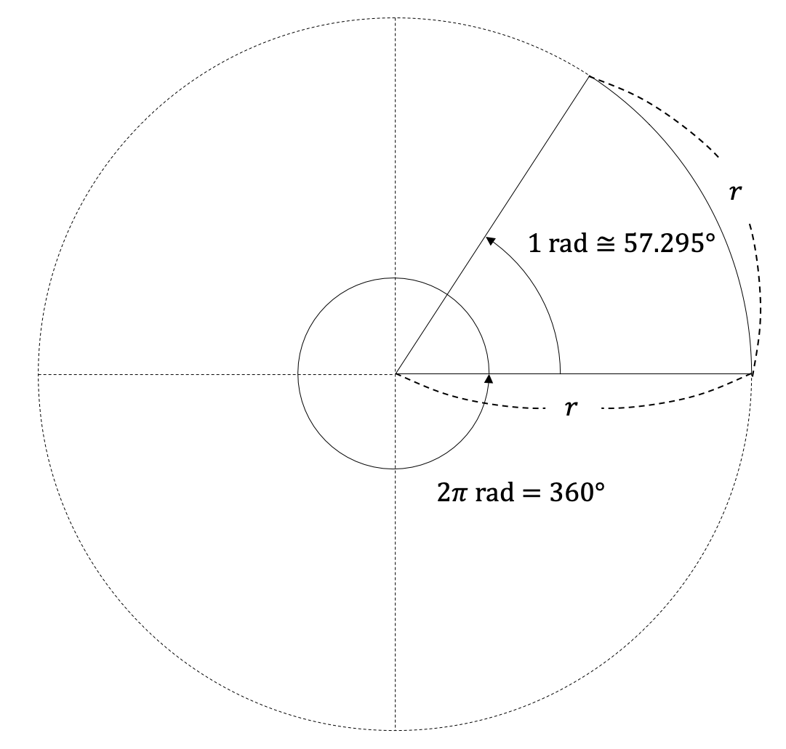
그림 5-1. 라디안의 정의
반지름이 r이고 호의 길이가 L인 부채꼴의 내각 \theta (쎄타, 일반적으로 각도를 나타낸다)는 다음과 같다.
\theta[\text{rad}]=L/r\tag{5.4}
식 (5.4)에서 L=r이면 \theta=1 rad이 되고 L=2\pi r이면 \theta=2\pi rad = 360^\circ가 된다.
식 (5.4)에서 L과 r의 단위가 같으므로 \theta의 단위는 무차원(숫자 1과 같다고 봐도 됨)이다. 무차원 단위를 왜 써야하는 것일까? rad은 '회전'과 관련이 있음을 표현하는 수단이다. 본 장에서 설명하는 내용을 읽어나가면 차차 이해하게 될 것이다.
식 (5.4)을 변형하면 다음과 같다.
L=r\theta\tag{5.5}
식 (5.5)로부터 원호의 길이는 반지름과 rad 단위의 각도를 곱하면 된다는 것을 알 수 있다. 무척이나 편리하다.
물리현상을 다루다 보면 각도법과 호도법의 변환을 자주 해야한다. 이를 무리하게 외루려하지 말고 다음의 방법을 사용해보자.
(1) 반원을 떠올린다.
(2) 반원이 이루는 내각은 180^\circ이고 \pi rad이다.
180^\circ=\pi\ \text{rad}\tag{5.6}
(3) 식 (5.6)을 정리하면 식 (5.7)과 식 (5.8)을 얻을 수 있다.
1=\frac{\pi\ \text{rad}}{180^\circ}\tag{5.7}
\frac{180^\circ}{\pi\ \text{rad}}=1\tag{5.8}
(4) 어떤 수에 1을 곱해도 그 값이 변하지 않으므로 마음껏 곱할 수 있다.
(5) 도를 rad으로 변환할 때는 식 (5.7)의 우변을 곱한다.
(6) rad을 도로 변환할 때는 식 (5.8)의 좌변을 곱한다.
예)
60^\circ = 60^\circ\frac{\pi}{180^\circ} = \frac{\pi}{3}
\frac{\pi}{2} = \frac{\pi}{2}\frac{180^\circ}{\pi} = 90^\circ
(rad은 1과 같으므로 생략가능)
참고로, 식 (5.7)로부터 1도를 rad으로 구하면 다음과 같다.
1^\circ=\frac{\pi}{180}\ \text{rad} \simeq 0.0175\ \text{rad}
직선거리를 표현하는 방식으로 길이와 변위가 있듯이 각도에도 방향이 없는 각도와 방향이 있는 각도가 존재한다. 하지만 두 가지 모두 '각도'라고 말한다. 상황에 따라 달리 해석해야 한다.
두 점 사이의 길이가 항상 0보다 크거나 같듯이 평면 위의 두 직선 사이의 각도도 항상 0보다 크거나 같다. 이러한 각도를 표현하는 방식은 '양방향' 부채꼴 화살표를 사용한다. 평면위에서 기준이 되는 직선을 정한 후 그 직선이 회전하였을 때 회전한 양과 방향을 나타내기 위하여 '단방향' 부채꼴 화살표를 사용한다. 단방향 화살표를 사용하는 각도의 경우 음수가 될 수도 있다.
일반적으로 반시계방향(counter clock wise, 줄여서 CCW라고 한다)으로 회전하는 것을 양(+)의 방향이라고 정한다. 시계방향(clock wise, CW)으로의 회전은 음(-)의 방향이 된다.
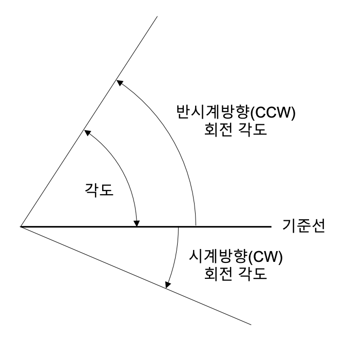
그림 5-2. 각도의 세 가지 표현
2. 각속도
각속도angular_velocity는 단위 시간당 각도의 변화량을 의미한다. 즉, 각도의 시간에 대한 미분이다. 각도는 60분법과 호도법을 모두 사용하지만 각속도는 주로 호도법을 사용한다. 각속도는 그리스 문자 \omega (오메가)로 표시한다.
\begin{aligned}
\omega &= \dot\theta \\
&= \frac{d\theta}{dt}
\end{aligned}\tag{5.9}식 (5.9)로부터 각속도의 단위를 얻을 수 있다. 각도를 시간으로 나눈 rad/s이다. 예를 들어 1 rad/s는 1초에 1 rad을 회전하는 것을 의미한다.
각도를 변위에 비유한다면 각속도는 속도에 비유할 수 있다.
3. 각가속도
각가속도angular_acceleration는 가속도의 회전 버전으로 생각할 수 있다. 각가속도는 단위 시간당 각속도의 변화량이다. 즉, 각속도의 시간에 대한 미분이다. 각가속도는 그리스 문자 \alpha (알파)로 표시한다.
\begin{aligned}
\alpha &= \dot\omega \\
&= \ddot\theta \\
&= \frac{d^2\theta}{dt^2}
\end{aligned}
\tag{5.10}각가속도의 단위는 각속도의 단위를 시간으로 나눈 rad/s2이다.
4. 회전관성모멘트
4장에서 질량은 물체의 움직임을 방해하는 성질이라고 하였다. 정확히 말하면 물체의 직선운동을 방해하는 성질이다. 그러면 물체의 회전운동을 방해하는 성질은 무엇일까? 바로 회전관성모멘트rotational_moment_of_inertia이다. 회전관성모멘트는 보통 I로 나타낸다.
직선운동시 질량과 가속도를 곱하면 힘이 된다고 하였다. 회전운동에 해당하는 방정식은 무엇일까? 질량은 회전관성모멘트에, 가속도는 각가속도에 해당하며 힘은 토크에 해당한다. 토크는 다음 절에서 설명한다.
표 5-1. 직선운동과 회전운동의 운동방정식 관계
| 직선운동 | 회전운동 | |
|---|---|---|
| 관성 | 질량 m | 회전관성모멘트 I |
| 운동 | 가속도 a | 각가속도 \alpha |
| 운동의 원인 | 힘 F | 토크 T |
| 운동방정식 | F=ma | T=I\alpha |
5. 토크
토크는 물체를 회전운동하게 만든다. 문손잡이를 잡아 돌리면 손잡이가 돌아가며 자동차 휠과 타이어가 회전하고 비행기 프로펠러가 돌아가고 바람개비가 뱅그르 회전한다. 이 모든 원인이 토크이다. 시소를 탈 때 무거운 사람이 중심으로 이동해야 균형을 이룬다. 그 이유도 토크로 설명할 수 있다. 토크torque란 힘과 그 힘이 작용하는 거리를 곱한 값이다. 시소에서 사람의 무게와 시소 중심에서 사람까지의 거리를 곱한 값이다.
T=F\cdot d\tag{5.11}
예를 들어 몸무게 50 kg인 철수가 시소중심에서 2 m 떨어진 곳에 앉았다면 몸무게 40 kg인 영희는 시소중심에서 2.5 m 떨어진 곳에 앉아야 균형이 맞는다.
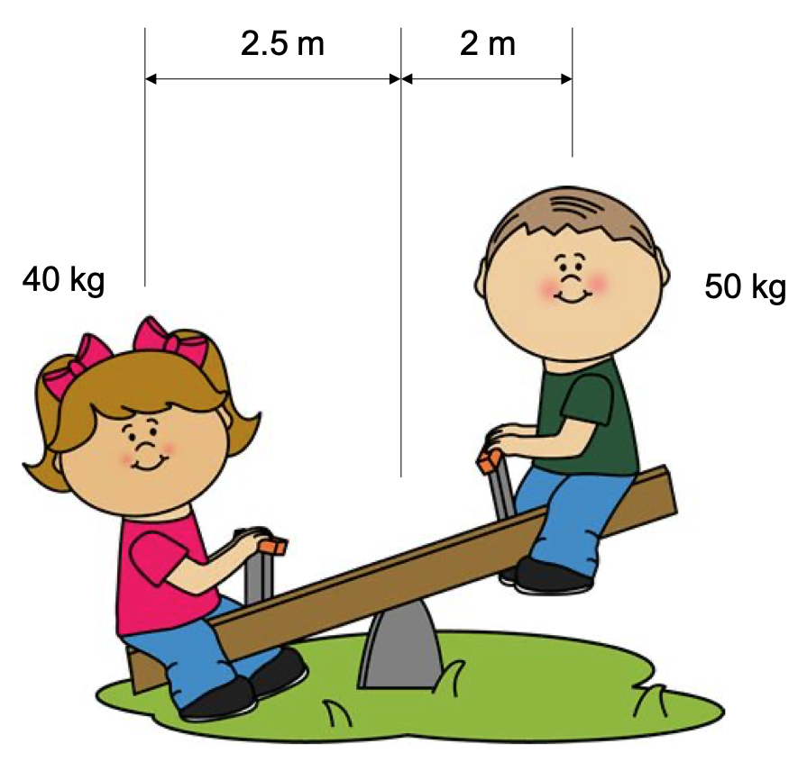
그림 5-3. 토크의 개념
위의 식을 보면 시소에서 앞에 앉은 무거운 사람은 F가 크지만 d가 작아 균형을 이룰 수 있는 것이다. 야구배트를 한 사람은 손잡이를 잡고 다른 한 사람은 방망이쪽을 잡아서 서로 반대방향으로 돌리기를 한다면 방망이쪽을 잡은 사람이 이기기 쉽다. 손잡이보다 방망이쪽이 더 두꺼워 같은 힘이라도 토크가 커지기 때문이다.
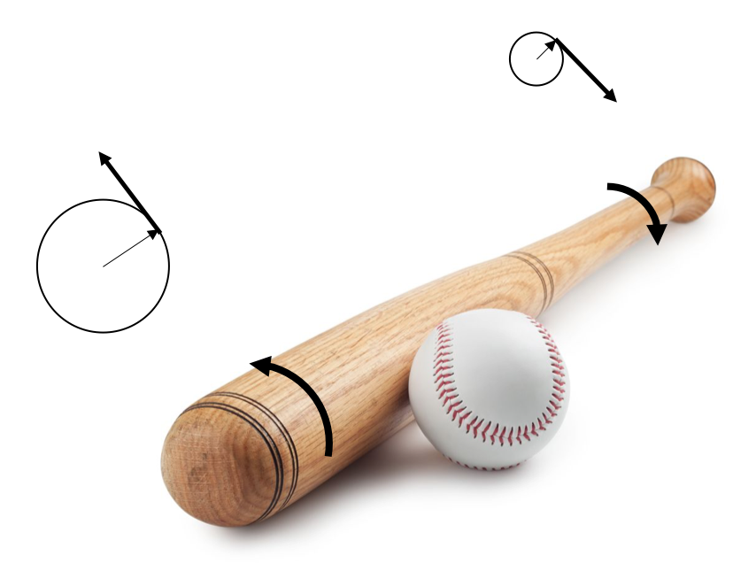
그림 5-4. 야구배트 돌리기
토크가 운동에 미치는 영향을 알아보자. 무중력 상태에 '정지'해있는 물체에 토크를 인가하면 그 순간 토크를 회전관성모멘트로 나눈 값과 같은 각가속도가 발생한다. 하지만 그 순간의 각속도는 0 rad/s이다. 토크를 지속적으로 인가하면 각속도가 증가하며 회전하기 시작한다.
\alpha=\frac{T}{I}\tag{5.12}
토크의 단위는 Nm이다. 일반적으로 N과 m을 붙여쓴다. Nm를 새로운 단위로 생각해도 무방하다.
6. 에너지와 일률
직진운동시 힘과 힘의 방향으로 움직인 거리를 곱하면 일이 된다고 하였다. 회전운동의 경우 토크와 토크 방향으로 회전한 각도를 곱하면 일이 된다.
W=T\cdot\theta\tag{5.13}
정지하고 있는 물체에 토크를 인가하여 회전시켰다면 토크는 일을 한 것이며 물체는 운동에너지를 갖는다. 일과 에너지의 단위는 직선운동일 때와 마찬가지로 J이다.
7. 각충격량
토크와 시간을 곱하면 각충격량angular_impulse이 된다. 어떤 물체에 \Delta t 시간 동안 토크 T가 인가된다면 각충격량 q_a은 다음과 같다.
\begin{aligned}
q_a &= T\cdot\Delta t \\
&= F\cdot d\cdot\Delta t \\
&= F\cdot\Delta t\cdot d \\
&= q\cdot d \\
\end{aligned}
\tag{5.14}식 (5.11)로부터 토크는 힘과 거리의 곱이므로 식 (5.14)의 두번째 줄 관계가 성립한다. 식 (4.6)으로부터 네번쨰 줄 관계가 성립한다.
각충격량의 단위는 Nm\cdots이다.
8. 각운동량
회전관성모멘트와 각속도를 곱하면 각운동량angular_momentum이 된다. 직선운동의 운동량에 해당하는 양이다.
L=I\cdot\omega\tag{5.15}
각운동량의 단위도 Nm\cdots이다.
6장. 기타 물리량
1. 압력
풍선에 바람을 불어넣으면 부풀어오른다. 풍선에 들어간 공기가 풍선 안쪽면을 밀어내기 때문이다. 무엇이 풍선을 밀어낼까? 바로 압력pressure이다.
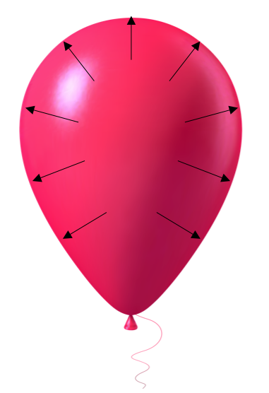
그림 5-5. 풍선의 압력
압력은 힘을 면적으로 나눈 값이다.
p=\frac{F}{A}\tag{5.16}
또한 압력에 면적을 곱하면 힘이 된다.
F=p\cdot A\tag{5.17}
즉, 압력은 어떠한 면적에 '평균적'으로 인가되는 힘을 의미한다.
압력은 공기나 액체와 같이 유체의 거동을 분석할 때 자주 사용한다. 공압(공기의 압력), 유압(유체의 압력), 수압(물의 압력), 기압(대기의 압력), 혈압(혈액의 압력) 등은 모두 압력을 나타내는 말이다.
압력의 단위는 Pa (Pascal, 파스칼)이며 이는 N/m2과 같다. 하지만 우리가 사는 지구 위의 기압이 약 105 Pa 이며 이를 간단히 표시하기 위하여 bar (바) 단위를 만들었다.
1 bar = 105 Pa
지표면의 대기압은 약 1.01325 bar이다. 성인 몸의 면적을 약 2 m2이라고 한다면 성인 몸 전체에 인가되는 힘은 약 200,000 N이 될 것이다. 어마어마한 힘이다. 하지만 걱정할 필요는 없다. 몸 내부에도 비슷한 크기의 압력이 작용하므로 평형을 이루고 있기 때문이다.
2. 유량
양동이에 물을 담으면 물이 정지해있을 것이다. 하지만 양동이 아래에 구멍을 뚫은 후 파이프를 연결하면 물이 흐를 것이다. 물이 얼마나 빨리 흐르는 지를 비교하기 위하여 단위 시간동안 흐른 물의 양을 사용할 수 있다. 단위 시간당 흐르는 유체의 양을 유량flow_rate이라고 한다. 유량의 단위는 부피를 시간으로 나눈 단위와 같다. m3/s, \ell/s 등을 사용한다.
3. 밀도
밀도density는 질량을 부피로 나눈 값이다. 밀도가 높으면 같은 부피의 물체라도 더 무겁다. 밀도의 단위는 질량을 부피로 나눈 단위이다. kg/m3, g/cm3 등을 사용할 수 있다.
<------------------------------------------------------->
여기서 꼬리말을 읽을 수 있어요. 다시 돌아가기 \rightarrow ↩︎
'되'는 약 1.8 리터이며 '말'은 10 되이다. ↩︎
약 3.3 m2이며 한 사람이 팔과 다리를 펴고 누울 수 있는 면적으로부터 만들어졌다고 한다. 일제강점기의 잔재로 알려져 2007년 7월 1일부터 한국산업규격에 따라 m2를 쓰도록 규정하고 있다. ↩︎
엄밀하게 설명하자면 단위에서 나누기의 의미는 미분derivative을 의미한다. 미분은 고등학교 수학과정에서 배운다. ↩︎
물리용어로 차원dimension이 같다고 말한다. ↩︎
대학과정에서 사용하는 용어이므로 여기서는 '물체의 운동'이라고 표현한다. ↩︎
여기서는 '힘과 운동'이라고 표현한다. ↩︎
우주의 모든 물체는 빛의 속도speed_of_light 이상으로 움직일 수 없으므로 실제로는 빛의 속도가 된다. 빛의 입자인 광자photon의 질량도 0 kg이다. ↩︎
자동차에 따라 전기모터와 발전기를 분리하는 경우도 있고 하나의 장치로 두 가지 역할을 하는 경우도 있다. ↩︎
자동차의 효율은 특별히 연료효율fuel_efficiency 또는 연비라고 부른다. ↩︎
엄밀하게 말하면 힘을 시간에 대하여 적분한 값이다. ↩︎